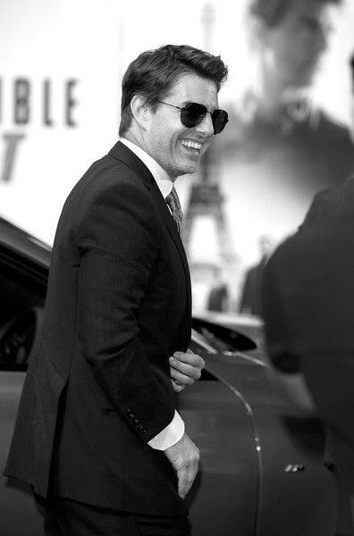

.jpg)
TOM CRUISE
INFORMATION
Tom Cruise, byname of Thomas Cruise Mapother IV, (born July 3, 1962, Syracuse, New York, U.S.), American actor who emerged in the 1980s as one of Hollywood’s most popular leading men, known for his clean-cut good looks and versatility.Cruise, who took up acting in high school, made film debut in Endless Love (1981). He had supporting roles in such movies as Taps (1981) and The Outsiders (1983) before starring as a high-school senior who turns his parents’ home into a brothel in Risky Business (1983). The movie was a major success, earning Cruise widespread recognition. His star status was cemented with Top Gun (1986), the highest-grossing film of that year, in which he played a navy jet pilot. In 1986 Cruise appeared opposite Paul Newman in The Color of Money , which was directed by Martin Scorsese, and two years later starred as an autistic man’s selfish brother in Rain Man. For his portrayal of a Vietnam War veteranturned activist in Born on the Fourth of July (1989), Cruise received his first Academy Award nomination.

ABOUT
Cruise went on to exhibit a broad depth and range of characters in his films during the 1990s, playing such diverse roles as a navy lawyer in A Few Good Men (1992), a vampire in Interview with the Vampire (1994), and a secret agent in Mission: Impossible (1996); the immense popularity of the latter film led to sequels in 2000, 2006, 2011, 2015, and 2018. His performance as a sports agent in Jerry Maguire (1996) earned Cruise a second Oscar nomination. In 1999 he starred with his then-wife, Nicole Kidman, in the highly anticipated final film of director Stanley Kubrick, Eyes Wide Shut (1999), an examination of marital fidelity that drew mixed reviews. That year Cruise also earned acclaim as a misogynistic self-help guru in Magnolia, for which he received an Academy Award nomination for best supporting actor.
KNOW MORE
Cruise starred in a number of action films in the 2000s, including the science-fiction thriller Minority
Report (2002), directed by Steven Spielberg; The Last Samurai (2003), in which he played a disaffected
U.S. soldier who aligns himself with a samurai community; and the gritty Los Angeles-set Collateral
(2004), in which he took on the role of an obdurate contract killer. He reteamed with Spielberg on War
of the Worlds (2005), a visually impressive adaptation of the H.G. Wells novel of the same name.
In 2008 Cruise earned laughs as an abrasive movie executive in the comedy Tropic Thunder, and he
portrayed the historical figure Col. Claus von Stauffenberg, a German army officer who organized
an attempt to assassinate Adolf Hitler, in Valkyrie.
Cruise’s personal life often attracted as much attention as his acting. His marriage to Kidman was followed closely by the Hollywood media, as was their divorce in 2001. Over the next few years, his outspoken support of Scientology proved controversial, especially his 2005 public denouncement of psychiatry as an illegitimate science (a view held by Scientologists). Cruise continued to find attention in tabloids and entertainment media through his public relationship with actress Katie Holmes, to whom he was married from 2006 to 2012.
PICTURES
CONTACT
TOM CRUISE
+91 5465428754